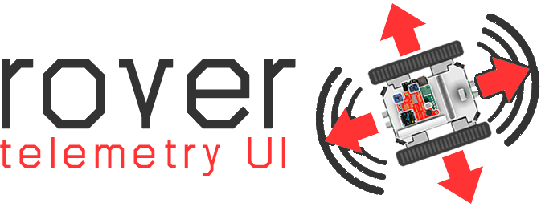

5. Cloud Communication¶
{kind=link}
In order to foster Cloud communication, the Rover automatically establish a MQTT connection to a Cloud’s message gateway. Upon connection, the Rover continuously send telemetry data to the Cloud, while it subscribes to a distinct Command & Control topic to receive driving commands from Cloud applications.
In this context, Rover Telemetry UI is a cloud-based application designed to communicate with multi-agent rovers via the MQTT protocol. The Rover Telemetry UI with detailed information is available here:
The following classes are used in the Roverapp to realize the Cloud communication:
RoverHonoCloud: Functions to connect and send data to Eclipse Hono
RoverPahoMQTT: Functions to use rover as a client and to publish/subscribe based on Eclipse Paho
RoverMQTTCommand: Rover-specific topic subscription and publishing
{kind=link}
5.1. Sending Telemetry Data¶
The Rover continuously send telemetry data to the /telemetry topic of the message gateway to make them available for cloud-based applications.
The following example shows in which data format the different sensor values and core usage information are sent to the Cloud:
1 2 3 4 5 6 7 8 9 10 11 12 13 14 15 16 17 18 19 20 21 22 | {
"gy521-accel-x":-1,
"gy521-accel-y":-1,
"gy521-accel-z":-1,
"gy521-angle-x":-35.264389038085938,
"gy521-angle-y":-35.264389038085938,
"gy521-angle-z":-54.735610961914062,
"gy521-gyro-x":-1,
"gy521-gyro-y":-1,
"gy521-gyro-z":-1,
"hmc5883l-bearing":47.366317749023438,
"infrared-frontleft":100.0,
"infrared-frontright":30.0,
"infrared-rearleft":50.0,
"infrared-rearright":100.0,
"ultrasonic-front":0.0,
"ultrasonic-rear":0.0,
"cores-core0":55.099998474121094,
"cores-core1":100.0,
"cores-core2":100.0,
"cores-core3":18.899999618530273
}
|
Within the Eclipse Kuksa Cloud, Eclipse Hono act as message gateway by providing protocol adapters for MQTT, HTTP, and CoAP, while other cloud services connect with Eclipse Hono over the AMQP 1.0 protocol.
5.2. Receiving Command & Control Messages¶
Among sending telemetry data, the Rover also subscribes to the /control/+/+/req/# topic to receive driving commands from distinct Cloud applications.
Command & Control messages are published to the Rover in the following format:
1 2 3 4 5 | {
"mode":<int mode>,
"command":<char command>,
"speed":<int speed>
}
|
"mode" entry allows to activate different driving modes.
For the Rover Telemetry UI, only "mode":0 is supported, which indicated manual driving.
"speed" entry is an integer value between 360 (lowest speed) and 480 (highest speed).
"command" entry indicates many integrated functions, such as the ones listed below:
F → Stop Movement
Q → Go Forward-Left
W → Go Forward
E → Go Forward-Right
A → Go Backward-Left
S → Go Backward
D → Go Backward-Right
J → Turn Left On Spot
K → Turn Right On Spot
R → Shutdown Rover
In this context, the Rover Telemetry UI make use of the Eclipse Hono Command & Control API, which allows business applications to send Command & Control messages to connected devices. A tutorial on how to send driving commands to the Rover is given here.